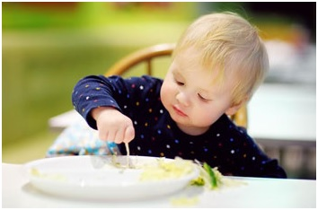

За столом
Уже с первых лет жизни нужно воспитывать у малыша умение правильно вести себя за столом. Но спешить в этом деле не следует. Малыш должен чувствовать себя за столом раскованным, а время приема пищи должно быть приятным для него. Это напрямую связано с процессами пищеварения.
Ребенок должен садиться за стол в спокойном состоянии – не возбужденным, не утомленным и не раздраженным. Поэтому возвращайтесь с прогулки за 20–30 минут до обеда или ужина, чтобы набегавшийся и наигравшийся малыш мог успокоиться. Для этого ему можно предложить тихую игру.
А как же быть с хорошими манерами? Ведь не секрет, что малыш, особенно в первое время после того, как он стал есть самостоятельно, ведет себя за столом подобно маленькому «свину». Приучать ребенка к опрятности во время еды следует исподволь. И здесь необходим прежде всего ваш собственный пример.
Садитесь за стол вместе с вашим ребенком, используйте это время для спокойной беседы о том, что ест малыш, как это полезно. Покажите ему, как держать ложку. Начинать учить малыша пользоваться ею можно с 1 года 1 месяца – 1 года 2 месяцев.
Предложите ему для начала есть ложкой блюдо, которое он очень любит, например протертую морковь с яблоком. Такое пюре легко зачерпнуть ложкой, оно не вываливается на стол при малейшей оплошности ребенка.
В первое время вам придется помогать малышу. И не только показывая, как нужно пользоваться ложкой, но и используя метод «пассивных движений». Не раздражайтесь, если у ребенка не все получается так, как вам хотелось бы. Не забывайте, что в этом возрасте ручная моторика у вашего сына или дочери находится еще в стадии становления, ребенку трудно освоить сразу те далеко не простые движения, которые для нас, взрослых, столь естественны.
Если вы будете чрезмерно требовательны и строги, у ребенка может сформироваться отрицательное отношение к приему пищи, и тогда у вас возникнут серьезные проблемы с питанием. Для того чтобы ребенок скорее «освоил» ложку, предоставляйте ему почаще возможность есть самостоятельно. При этом выбирайте такое время, когда вы никуда не спешите. При вашем благожелательном и спокойном отношении, при достаточно частой тренировке ребенок уже к середине 2-го года жизни будет есть самостоятельно.
Ребятишек, страдающих расстройством аппетита, нередко приходится готовить к приему пищи. Для этого можно использовать страсть маленьких детей делать что-нибудь, как мама. В этом возрасте малыш должен знать, что перед едой нужно вымыть руки. Пусть он сам надевает на себя фартучек или нагрудник, сервирует стол, предварительно покрыв его клеенкой или положив на нее салфетку.
Малыша лучше кормить отдельно. За общим столом он отвлекается, требует дать то, что по возрасту ему никак не положено, капризничает. Хотя есть дети, которые едят лучше и за общим столом. Но в любом случае место, где ребенок ест, должно быть постоянным.
Во время еды помогайте малышу оставаться чистым. Так начинает складываться навык опрятности за столом. Если малыш пачкает личико или пальчики пищей, сначала вытирайте его вы, а затем предложите ему сделать это самому. При спокойном и неукоснительном приучении к опрятности малыш уже к концу 3-го года жизни ест аккуратно, а закончив еду, вытирает руки и губы салфеткой.
Во время еды нельзя торопить ребенка, заставлять его есть насильно. Подчас малыш, не желающий есть, не глотает пищу, держит ее во рту, в то время как бабушка или мама засовывают ему в рот все новые ложки с едой. Ни к чему иному, как к расстройству аппетита и отвращению к пище, такой метод кормления не приводит.
Если малыш не хочет есть, позвольте ему выйти из-за стола. Но уж тут постарайтесь выдержать характер и ничего из еды не давайте ребенку до следующего кормления. Пусть ваше родительское сердце не сжимается от жалости. Ничего ужасного не произойдет, если ребенок не поел однажды. Как раз перекусы в таком случае – плохая мера воспитания. Ребенок быстро разберется в вашей слабости и будет ее использовать в дальнейшем. Так проблему с кормлением вам не решить.
Во время еды приучайте ребенка выражать свои просьбы спокойно и вежливо, пользуясь словом «пожалуйста». И вновь подчеркнем – в поведении ребенка отражаются те формы обращения, которые приняты у вас в семье. Вам трудно требовать от малыша придерживаться норм поведения, которых он не встречал в повседневной жизни. Помните о том, что малыш в этом возрасте во всем подражает вам.